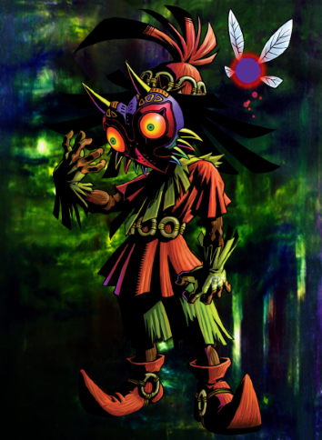

StoryLink, after saving Princess Zelda and the citizens of Hyrule, is looking for his friend Navi in the Lost Woods. He is attacked by a mysterious creature, and is forced to traverse the land of Termina. It is there that he encounters the equally mysterious Mask Salesman. Link is told that in order to retrieve that which he has lost he will have to confront the Skull Kid and the ominous Majora's Mask. -Wikipedia |
 |
History
| Nintendo legend Shigiru Miyamoto, the inventor of Mario and Donkey Kong, challanged Eiji Aonuma to create a new Legend of Zelda game in only 1 Year. Aonuma accepts on the terms that he gets to make his own vision for the game and not just a remashed version of the previous game Ocarina of Time. Aonuma recalled the experience as being very stressful and said that his team would spend all night working to ensure they meet deadlines. Fans speculate some of that frustration made its way into the game producing some if its darker tones. The games portail of the Ominous Moon looming over Termina and its citizens. |  |